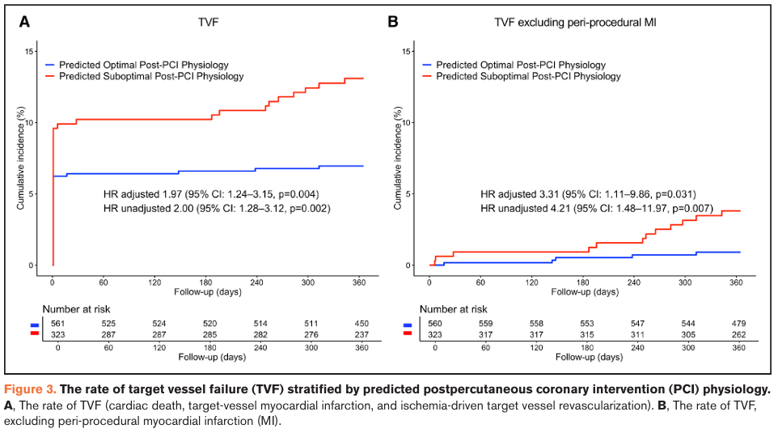

Thresholds of 0.83 for the LAD and 0.93 for non-LAD vessels were applied to stratify patients into optimal or suboptimal post-PCI physiology.

All content and Post PCI prediction formula are from the paper below.Ikeda, K., Mizukami, T., Sakai, K., Bouisset, F., Jeroen Sonck, Adriaan Wilgenhof, Matsuo, H., Toshiro Shinke, Ando, H., Hada, M., Ko, B. S., Biscaglia, S., Rivero, F., Engstroem, T., Leone, A. M., Xavier, Fearon, W. F., Christiansen, E. H., Fournier, S., & Desta, L. (2025). Impact of Pullback Pressure Gradient on Clinical Outcomes after Percutaneous Coronary Interventions. Circulation Cardiovascular Interventions, 18(12), e016022–e016022. https://doi.org/10.1161/circinterventions.125.016022Click to see full text